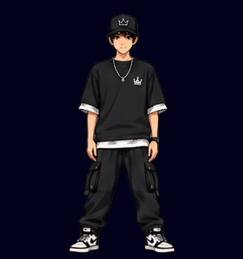

Revisão de sprites
Dançarino (tutting) com a sequência corrigida e as insígnias da plataforma. Página interna de conferência, fora da área de membros.
Tutting · sequência em movimento
À esquerda, o GIF de prévia (15 quadros, 160 ms cada). À direita, a mesma faixa de quadros como sprite, que é o formato usado nas páginas, com controle de velocidade e quadro a quadro.


Quadro a quadro
Clique em um quadro para parar o sprite nele. Abaixo de cada quadro está o número que ele tinha na folha original.
Quadros da folha original que ficaram de fora:
Insígnias
Como aparecem no perfil do membro: conquistada (com brilho) ou a conquistar (apagada).